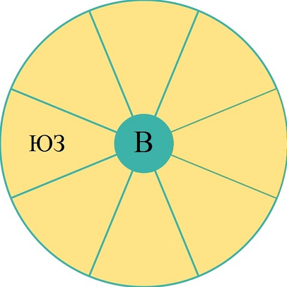

Данный тест посвящен ориентированию относительно сторон света. Инструкция:
В данном тесте изображен круг, разделенный на 8 равных секторов, каждый сектор соответствует одному направлению.
Вам даются два направления: известное (на изображении сверху - юго-запад) и неизвестное, указанное в центральной окружности (на изображении сверху - восток).
Вы должны сориентироваться относительно известного направления и указать сектор, который соответствует неизвестному направлению.
Фамилия
Имя
Группа
Специальность
В
ЮВ
Ю
ЮЗ
З
СЗ
С
СВ
Инструкция: Инструкция:
В данном тесте изображен круг, разделенный на 8 равных секторов, каждый сектор соответствует одному направлению.
Вам даются два направления: известное и неизвестное, указанное в центральной окружности.
Вы должны сориентироваться относительно известного направления и указать сектор, который соответствует неизвестному направлению.